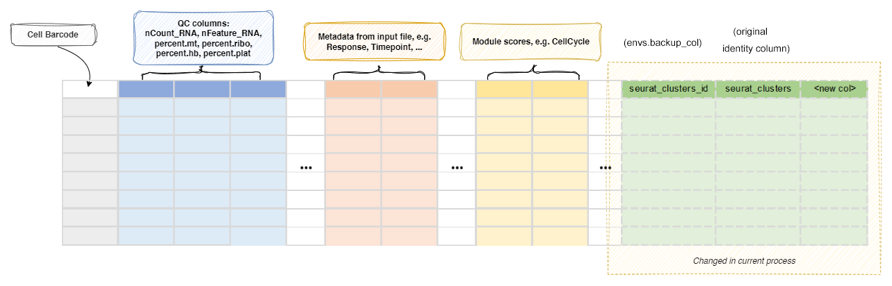

CellTypeAnnotation¶
Annotate all or selected T/B cell clusters.
Annotate the cell clusters. Currently, the following ways are supported:
- Pass the cell type annotation directly (at cluster-level or cell-level)
- Use
ScType(cluster-level, marker-based) - Use
scCATCH(cluster-level, marker-based) - Use
hitype(cell-level or cluster-level, marker-based) - Use
celltypist(cell-level, model-based) - Use
scSorter(cell-level, marker-based) - Use
SCINA(cell-level, marker-based) - Use
SingleR(cluster-level, model-based) - Use
scHDeepInsight(cell-level, model-based) - Use
LLMCelltype(cluster-level, LLM-based, a fork ofgptcelltype) - Use
cellassign(cell-level, marker-based) - Use
scBERT(cell-level, model-based) - Use
CelliD(cell-level, marker-based) - Use
scAgentType(cluster-level, LLM-based, agentic) - Use
garnett(cell-level, model-based) - Use
UCell(cell-level, marker-based scoring) - Use
AUCell(cell-level, marker-based scoring) - Use
GSVA(cell-level, marker-based scoring) - Use
singscore(cell-level, marker-based scoring) - Use
scmap(cell-level or cluster-level, reference-based) - Use
CHETAH(cell-level, reference-based) - Use
scClassify(cell-level, reference-based) - Use
scPred(cell-level, reference-based) - Use
Azimuth(cluster-level, reference-based) - Use
SCSA(cluster-level, marker-based, python) - Use
MACA(cell-level, marker-based, python, a modernized fork should be used, https://github.com/pwwang/MACA/tree/modernize) - Use
scMapNet(cell-level, marker-based, python) - Use
mLLMCelltype(cluster-level, LLM-based) - Use
LICT(cluster-level, LLM-based, a modernized fork should be used, https://github.com/pwwang/LICT/tree/modernize) - Use
MapQuery(cell-level, reference-based)
The <workdir> is typically ./.pipen and the <pipline_name> is Immunopipe
by default.
Note
If you have other annotation processes, including SeuratClustering
process or SeuratMap2Ref process enabled in the same run,
you may want to specify a different name for the column to store the annotated cell types
using envs.anno_col, so that the results from different annotation processes won't overwrite each other.
Attention
If you are running the pipeline with the Docker image, following tools are not available in the Docker image:
- Direct assignment:
direct,cell - Marker-based:
ScType,hitype,scSorter,SCINA,CelliD,UCell,AUCell,GSVA,singscore,SCSA,MACA - Model-based:
celltypist,SingleR - LLM-based:
LLMCelltype,mLLMCelltype,LICT - Reference-based:
scmap,CHETAH,scClassify,MapQuery
Input¶
sobjfile: The single-cell object in RDS/qs/qs2/h5ad format.
Output¶
outfile: Default:{{in.sobjfile | stem}}.annotated.{{- ext0(in.sobjfile) if envs.outtype == 'input' else envs.outtype -}}.
The rds/qs/qs2/h5ad file of seurat object with cell type annotated.
A text file containing the mapping from the old identity to the new cell types will be generated and saved tocluster2celltype.tsvunder the job output directory.
Another text file containing the per-cell annotations will be generated and saved tocell2celltype.tsvunder the job output directory, with the cell barcodes in the first column (Cell) and one column per case that produces cell-level annotations.
Note that the identity of the output Seurat object will be set to the annotation column (envs.anno_col) whenenvs.set_identisTrue(seeenvs.set_ident).
Environment Variables¶
tool(choice): Default:direct.
The tool to use for cell type annotation.sctype(cluster-level): UsescTypeto annotate cell types.
See https://github.com/IanevskiAleksandr/sc-typehitype(cell-level): Usehitypeto annotate cell types.
Runs at cell-level by default; setenvs.identfor cluster-level annotations (hitype then scores each cluster as a whole and assigns it one cell type). See https://github.com/pwwang/hitypesccatch(cluster-level): UsescCATCHto annotate cell types.
See https://github.com/ZJUFanLab/scCATCHcelltypist(cell-level): Usecelltypistto annotate cell types.
It can also generate cluster-level annotations via its over-clustering mechanism (envs.celltypist.over_clusteringorenvs.ident).
See https://github.com/Teichlab/celltypistscsorter(cluster-level): UsescSorterto annotate cell types.
See https://github.com/pwwang/scSorter, an optimized version of https://pmc.ncbi.nlm.nih.gov/articles/PMC7898451/, which increases the speed of the original scSorter.scina(cell-level): UseSCINAto annotate cell types.
See https://github.com/jcao89757/SCINAsingler(cluster-level): UseSingleRto annotate cell types.
See https://github.com/dviraran/SingleRgarnett(cell-level): UseGarnettto annotate cell types with a pre-trained classifier (trained from marker genes and expression data).
See https://cole-trapnell-lab.github.io/garnett/schdeepinsight(cell-level): UsescHDeepInsightto annotate cell types.
See https://github.com/shangruJia/scHDeepInsightllmcelltype(cluster-level): UseLLMCelltypeto annotate cell types with LLMs. See https://github.com/pwwang/LLMCelltype It is the model provider agnostic version ofgptcelltype.cellassign(cell-level): Usecellassignto annotate cell types with a probabilistic model.
See https://github.com/Irrationone/cellassignscbert(cell-level): UsescBERTto annotate cell types with a BERT-based transformer model.
See https://github.com/TencentAILabHealthcare/scBERTcellid(cell-level): UseCelliDto annotate cell types with MCA-based per-cell gene signature enrichment.
See https://github.com/RausellLab/CelliDscagenttype(cluster-level): UsescAgentTypeto annotate cell types with an agentic LLM workflow.
See https://github.com/sathyasjali/scAgentTypeucell(cell-level): UseUCellto annotate cell types by scoring the marker table with equal weights.
See https://github.com/carmonalab/UCellaucell(cell-level): UseAUCellto annotate cell types by scoring the marker table with equal weights.
See https://github.com/aertslab/AUCellgsva(cell-level): UseGSVAto annotate cell types by scoring the marker table with equal weights.
See https://bioconductor.org/packages/release/bioc/html/GSVA.htmlsingscore(cell-level): Usesingscoreto annotate cell types by scoring the marker table with equal weights.
See https://bioconductor.org/packages/release/bioc/html/singscore.htmlscmap(cell-level): Usescmapto transfer the cell types of a reference object.
See https://bioconductor.org/packages/release/bioc/html/scmap.htmlcheetah(cell-level): UseCHETAHto transfer the cell types of a reference object.
See https://bioconductor.org/packages/release/bioc/html/CHETAH.htmlscclassify(cell-level): UsescClassifyto transfer the cell types of a reference object.
See https://bioconductor.org/packages/release/bioc/html/scClassify.htmlscpred(cell-level): UsescPredto transfer the cell types of a reference object.
See https://github.com/powellgenomicslab/scPredazimuth(cell-level): UseAzimuthto transfer the annotation levels of a published reference.
See https://github.com/satijalab/azimuthscsa(cluster-level): UseSCSAto annotate cell types.
See https://github.com/bioinfo-ibms-pumc/SCSAmaca(cell-level): UseMACAto annotate cell types.
See https://github.com/ImXman/MACAscmapnet(cell-level): UsescMapNetto annotate cell types.
See https://github.com/Yuz7/scMapNetmllmcelltype(cluster-level): UsemLLMCelltypeto annotate cell types with LLMs. See https://github.com/cafferychen777/mLLMCelltypelict(cluster-level): UseLICTto annotate cell types with LLMs.
See https://github.com/Glowworm-cell/LICTmapquery(cell-level): UseSeurat::MapQuery()to transfer the cell types of a reference object.
See https://satijalab.org/seurat/reference/mapquerydirect(cluster-level): Directly assign cell typescell(cell-level): Directly assign cell types, but at cell-level instead of cluster-level.
assay: The assay to use for the analysis. If not specified, the default assay will be used.
Will not be inherited by the cases underenvs.cases.
To use a different assay for a case, specify it in the case args.
This will be also used to convert Seurat object to h5ad if the input is Seurat object and the output is h5ad.layer: The layer in the assay to use for the analysis. If not specified, the default layer will be used.ident: The column name in metadata to use as the clusters.
For cluster-level tools, this is required, and if not specified, the identity column will be used when input is rds/qs/qs2 (supposing we have a Seurat object).
If input data is h5ad, this is required to run cluster-based annotation tools.
For cell-level tools, if specified, a cluster-level annotation will also be generated by majority vote of the cells in each cluster, and saved tocluster2celltype.tsv.
Forhitype, this switches to cluster-level scoring (cell-level is the default when it is not set).
Forcelltypist, this is a shortcut to setover_clusteringinenvs.celltypist(seeenvs.celltypist.over_clustering).
"ident"can be used as an alias for the identity column.
To set it for a specific case, useenvs.cases.X.ident.anno_col(type=str): Default:CellType.
The name of the column to store the annotated cell types (default:CellType).
For cluster-level tools (or cell-level tools withenvs.ident), the annotation column stores the cluster-level cell types.
For cell-level tools, the per-cell annotations are also saved to a tool-specific column (e.g.scina_celltype), and ifenvs.identis specified,anno_colstores the majority-vote results of the clusters.
For the default case (DEFAULT), the column is named asanno_col; for other cases, the case name is prefixed to the column name unlessenvs.add_prefixisFalse.set_ident(flag): Default:True.
Whether to set the identity of the output Seurat object to the annotation column.
If all cases haveset_identset toFalse, the original identity is kept.
If multiple cases haveset_identset toTrue, a warning is given and the last case wins.
Can be set per case viaenvs.cases.X.set_ident(default: True).sctype(ns): The arguments forsctypeiftoolissctype.tissue: The tissue to use forsctype.
Available tissues should be the first column (tissueType) ofdb.
If not specified, all rows indbwill be used.cancer: Filter the markers by thecancercolumn of a universal marker table (see the note above). Only works with a universal marker table that has acancercolumn.species: Filter the markers by thespeciescolumn of a universal marker table (see the note above). Only works with a universal marker table that has aspeciescolumn.db: Default:"".
The database to use for sctype.
Check examples at https://github.com/IanevskiAleksandr/sc-type/blob/master/ScTypeDB_full.xlsx Can also be a universal marker table (see the note above).
hitype(ns): The arguments forhitypeiftoolishitype.tissue: The tissue to use forhitype.
Available tissues should be the first column (tissueType) ofdb.
If not specified, all rows indbwill be used.cancer: Filter the markers by thecancercolumn of a universal marker table (see the note above). Only works with a universal marker table that has acancercolumn.species: Filter the markers by thespeciescolumn of a universal marker table (see the note above). Only works with a universal marker table that has aspeciescolumn.db: The database to use for hitype.
Compatible withsctype.db.
See also https://pwwang.github.io/hitype/articles/prepare-gene-sets.html You can also use built-in databases, includinghitypedb_short,hitypedb_full, andhitypedb_pbmc3k.
Can also be a universal marker table (see the note above).
When the table has aweightcolumn (e.g. trained byHitypeWeightTrainer), the weights are used as-is for scoring (hitype >= 0.0.6).norm: Default:sqrt.
The normalization method forhitype::hitype_score().
One of "sqrt", "weight", "none" (default: "sqrt").
"weight" is recommended when scoring with learned weights.use_sensitivity: Default:True.
Whether to weight markers by their sensitivity (default:True).Falseis recommended when scoring with learned weights.threshold: Default:0.0.
The assignment threshold passed toRunHitype(default:0.0).
scsorter(ns): The arguments forscSorter::RunScSorter()iftoolisscsorter.db: The database to use for scSorter. It will be loaded and passed to theannoargument ofRunScSorter(). It could be either:- A TSV file with cell type annotations, with columns
Type,Marker, andWeight. - A RDS/qs2 file of the annotation data frame with the same columns as above.
Can also be a universal marker table (see the note above).
You can also use#followed by the column names (aliases allowed) or 1-based indices to specify the columns, for example,file:///path/to/scsorter_db.tsv#celltype,marker,weight.
A third column is used asWeightonly if it is namedweight(or an alias of it).
- A TSV file with cell type annotations, with columns
assay: The assay to use forRunScSorter().
If not specified,envs.assaywill be used.tissue: Filter the markers by thetissuecolumn of a universal marker table (see the note above). Only works with a universal marker table that has atissuecolumn.cancer: Filter the markers by thecancercolumn of a universal marker table (see the note above). Only works with a universal marker table that has acancercolumn.species: Filter the markers by thespeciescolumn of a universal marker table (see the note above). Only works with a universal marker table that has aspeciescolumn.<more>: Other arguments forscSorter::RunScSorter().
scina(ns): The arguments forSCINA::SCINA()iftoolisscina.db(type=str): The path to the SCINA signature file.
It can be an RDS file containing a named list of signature genes (the names are the cell types and the values are the marker gene symbols), or a CSV file with the markers for each cell type in a column.
Can also be a universal marker table (see the note above).tissue: Filter the markers by thetissuecolumn of a universal marker table (see the note above). Only works with a universal marker table that has atissuecolumn.cancer: Filter the markers by thecancercolumn of a universal marker table (see the note above). Only works with a universal marker table that has acancercolumn.species: Filter the markers by thespeciescolumn of a universal marker table (see the note above). Only works with a universal marker table that has aspeciescolumn.max_iter(type=int): Maximum number of EM iterations (default: 100).convergence_n(type=int): Stop if assignment stays stable for N consecutive rounds (default: 10).convergence_rate(type=float): Fraction of cells with stable assignment for convergence (default: 0.99).sensitivity_cutoff(type=float): Cutoff (0-1) for removing signatures of absent cell types (default: 1).rm_overlap(flag): Whether to remove genes shared between multiple signatures (default: TRUE).allow_unknown(flag): Whether to allow unknown cells (default: TRUE).<more>: Other arguments forSCINA::SCINA().
singler(ns): The arguments forSingleR::SingleR()iftoolissingler.
Both the Bioconductor and CRAN versions are auto-detected.db(type=str): The path to the SingleR reference file.
It can be an RDS, qs, or qs2 file containing a reference object, supporting:SummarizedExperiment(e.g., from thecelldexpackage).
References can be obtained viacelldex::HumanPrimaryCellAtlasData(),celldex::BlueprintEncodeData(),celldex::MonacoImmuneData(),celldex::DatabaseImmuneCellExpressionData(),celldex::NovershternHematopoieticData(),celldex::ImmGenData(),celldex::MouseRNAseqData().Seuratobject. Labels are auto-detected from metadata.
Save withsaveRDS()orbiopipen.utils::write_obj().
Both the Bioconductor and CRAN versions of SingleR are supported and auto-detected at runtime.
label(type=str): The metadata/colData column name for reference labels. Auto-detected fromlabel.main,label.fine,label.ont,labelin order.<more>: See the SingleR documentation for your version:
BioconductororCRAN.
garnett(ns): The arguments forgarnett::classify_cells()iftoolisgarnett. The process takes a trained classifier and predicts the cell types for each cell — no training step is performed. A classifier can be trained with theGarnettClassifierTrainerprocess from a Seurat object and marker genes, or you can use a pre-trained one from https://cole-trapnell-lab.github.io/garnett/classifiers/.
The Seurat object is converted to a monocle3cell_data_setfor classification, and cells that cannot be confidently classified are labeledUnknown.classifier(type=str): The path to the trained classifier file (an RDS file containing agarnett_classifierobject, saved bygarnett::save_classifier()).db(type=str): Default:none.
The name of the installed annotation package used to convert the gene IDs of the expression data to the gene IDs the classifier was trained on (default:none, i.e.
no conversion). The official pre-trained classifiers are trained on ENSEMBL gene IDs, so for expression data with gene symbols you need e.g.db: org.Hs.eg.dbtogether withcds_gene_id_type: SYMBOL.cds_gene_id_type(choice): Default:custom.
The gene ID type of the expression data, used whendbis notnone(default:custom).
Supported types includecustom,SYMBOL,ENSEMBL,ENTREZID.assay(type=str): The assay to use for classification.
If not specified,envs.assaywill be used.
The assay must contain raw counts.cluster_extend(flag): Default:False.
Use Garnett's own cluster mode: the clusters are passed as thegarnett_clustercolumn of thecell_data_set, andclassify_cells()extends the labels over each cluster (cluster_ext_type) instead of the engine aggregating the per-cell labels by majority vote (default: FALSE).<more>: Other arguments forgarnett::classify_cells(), e.g.rank_prob_ratio,cluster_extend_max_frac_unknown,cluster_extend_max_frac_incorrect,return_type_levels, andverbose.
schdeepinsight(ns): The arguments for scHDeepInsight iftoolisschdeepinsight. Gated by default: theSCHdeepinsightpackage (0.3.5) is not installed, and the tool additionally needs a reference file and a pretrained checkpoint.
To un-gate it, runpip install SCHdeepinsight(pluspip install git+https://github.com/alok-ai-lab/pyDeepInsight.git) inpythonand download the checkpoint from https://github.com/shangruJia/scHDeepInsight.ref(type=str): The path to the scHDeepInsight reference RDS file. The bundledreference.rdsfrom the scHDeepInsight repo provides immune cell reference.
See https://github.com/shangruJia/scHDeepInsight.batch_size(type=int): Batch size for CNN prediction (default: 128).python(type=str): Path to Python executable withSCHdeepinsightinstalled.assay(type=str): Assay to use for h5ad conversion.
llmcelltype(ns): The arguments forLLMCelltype::llmcelltype()iftoolisllmcelltype.api_key(type=str): OpenAI API keymodel(type=str): GPT model (required, e.g.
'gpt-4', 'gpt-4o').base_url(type=str): Custom base URL for OpenAI-compatible providers.tissuename(type=str): Tissue name for context.sigmarkers(type=str): Default:p_val_adj < 0.05.
A expression to filter the result fromRunSeuratDEAnalysis(), e.g.avg_log2FC > 0.25 & p_val_adj < 0.05, to be used for generating the marker gene list for LLM.assay(type=str): Assay to use forFindAllMarkers().<more>: Additional args passed tobiopipen.utils::RunSeuratDEAnalysis().cache: Default:/tmp.
cellassign(ns): The arguments forcellassign::cellassign()iftooliscellassign.db(type=str): The path to the marker gene info file forcellassign. Supports:- RDS/qs2 file: a binary gene×celltype matrix or a named list (cell type → vector of marker genes)
- CSV/TSV file: with columns
geneandcell_typeCan also be a universal marker table (see the note above).
tissue: Filter the markers by thetissuecolumn of a universal marker table (see the note above). Only works with a universal marker table that has atissuecolumn.cancer: Filter the markers by thecancercolumn of a universal marker table (see the note above). Only works with a universal marker table that has acancercolumn.species: Filter the markers by thespeciescolumn of a universal marker table (see the note above). Only works with a universal marker table that has aspeciescolumn.python(type=str): Default:python.
Path to Python withtensorflowinstalled.assay(type=str): Assay to extract raw counts from.min_delta(type=int): Min log-fold change for marker overexpression (default: 2).B(type=int): Number of RBF dispersion bases (default: 10).shrinkage(flag): Hierarchical shrinkage on delta (default: TRUE).n_batches(type=int): Data subsample batches (default: 1).learning_rate(type=float): ADAM learning rate (default: 0.1).max_iter_em(type=int): Max EM iterations (default: 20).verbose(flag): Print progress (default: TRUE).<more>: Additional args tocellassign::cellassign().
scbert(ns): The arguments for scBERT inference iftoolisscbert.ref(type=str): The path to the scBERT repo directory (containingperformer_pytorch/).model(type=str): The path to the fine-tuned model checkpoint (.pth file).label_dict(type=str): The path to the label dictionary pickle file (maps class indices to cell type names).python(type=str): Path to Python with scBERT dependencies (torch, scanpy, etc.).bin_num(type=int): Number of bins for expression embedding (default: 5).gene_num(type=int): Number of genes expected by the model (default: 16906).seed(type=int): Random seed (default: 2021).pos_embed(flag): Use Gene2vec positional encoding (default: TRUE).novel_type(flag): Enable novel cell type detection (default: FALSE).unassign_thres(type=float): Confidence threshold for unassigned cells (default: 0.5).<more>: Additional args to the wrapper script.
cellid(ns): The arguments for CelliD iftooliscellid.db(type=str): The path to the marker gene set file forcellid. Supports:- RDS/qs2 file: a named list (cell type → vector of marker genes)
- CSV/TSV file: with columns
geneandcell_typeCan also be a universal marker table (see the note above).
tissue: Filter the markers by thetissuecolumn of a universal marker table (see the note above). Only works with a universal marker table that has atissuecolumn.cancer: Filter the markers by thecancercolumn of a universal marker table (see the note above). Only works with a universal marker table that has acancercolumn.species: Filter the markers by thespeciescolumn of a universal marker table (see the note above). Only works with a universal marker table that has aspeciescolumn.nmcs(type=int): Number of MCA components (default: 50).n_features(type=int): Top n features per cell for hypergeometric test (default: 200).dims(type=auto): MCA dimensions to use (default: seq(nmcs)).min_size(type=int): Min overlapping genes (default: 10).log_trans(flag): -log10 transform p-values (default: TRUE).p_adjust(flag): Benjamini-Hochberg correction (default: TRUE).group_gsea(flag): Default:False.
Use CelliD's own cluster mode (CelliD::RunGroupGSEA()): the clusters are annotated from the gene-set enrichment scores of the whole group (the best-scoring pathway by NES) instead of the engine aggregating the per-cell hypergeometric test by majority vote (default: FALSE).
-
cell_types(type=auto): Default:[].
The cell types to use for direct or cell-level annotation.
Fordirect, the cell types will be assigned to the clusters in the order of the original identities.
If given as a list (array), you can use"-"or""as the placeholder for the clusters that you want to keep the original cell types. If the length ofcell_typesis shorter than the number of clusters, the remaining clusters will be kept as the original cell types.
You can also useNAto remove the clusters from downstream analysis (the cells in these clusters will be removed from the Seurat object).
If given as a dict (map), the keys are the original cluster names and the values are the new cell types.
Forcell, it must be a TSV file with cell-level annotations.
You can specify the column names after the#. For example,file:///path/to/cell_types.tsv#cell_id,cell_typewill usecell_idas the cell id column to match the cell ids in the Seurat object, andcell_typeas the cell type column to assign the cell types.
Multiple cell type columns can be specified, and the first one will be used as the annotation column (the others will be added as additional annotation columns).
You can also use 1-based column index to specify the columns, for example,file:///path/to/cell_types.tsv#1,3will use the first column as the cell id column and the third column as the cell type column.
If cells in the Seurat object are not found in the cell type file,NAs will be assigned to those cells.
If no columns are specified, the first two columns will be used as the cell id and cell type columns.
Prefixfile://is optional.For
cell, it must be a TSV file with cell-level annotations.
You can specify the column names after the#. For example,file:///path/to/cell_types.tsv#cell_id,cell_typewill usecell_idas the cell id column to match the cell ids in the Seurat object, andcell_typeas the cell type column to assign the cell types.
Multiple cell type columns can be specified, and the first one will be used as the new identity column.
You can also use 1-based column index to specify the columns, for example,file:///path/to/cell_types.tsv#1,3will use the first column as the cell id column and the third column as the cell type column.
If cells in the Seurat object are not found in the cell type file,NAs will be assigned to those cells.
If not columns are specified, the first two columns will be used as the cell id and cell type columns.
Prefixfile://is optional. -
more_cell_types(type=json): The additional cell type annotations to add to the metadata.
The keys are the new column names and the values are the cell types lists.
The cell type lists work the same ascell_typesabove.
This is useful when you want to keep multiple annotations of cell types. -
sccatch(ns): The arguments forscCATCH::findmarkergene()iftoolissccatch.species: The specie of cells.
Whenmarkeris a custom (universal) marker table, only the rows matching the value are kept; otherwise it is used to filter the built-in scCATCH database.cancer: If the sample is from cancer tissue, then the cancer type may be defined.
Defaults to "Normal" if notif_use_custom_marker.
Whenmarkeris a custom (universal) marker table, only the rows matching the value are kept; otherwise it is used to filter the built-in scCATCH database.tissue: Tissue origin of cells must be defined.
Whenmarkeris a custom (universal) marker table, only the rows matching the value are kept; otherwise it is used to filter the built-in scCATCH database.marker: The marker genes for cell type identification.
Can also be a universal marker table (see the note above).
An error is raised ifspecies,cancer, ortissueis set but the table has no such column or no rows match.if_use_custom_marker(flag): Default:False.
Whether to use custom marker genes.
Whenmarkeris provided, this is set toTrueautomatically, andspecies,cancer, andtissuefilter the custom markers if set.<more>: Other arguments forscCATCH::findmarkergene().
You can pass an RDS file tosccatch.markerto work as custom marker. If so,if_use_custom_markerwill be set toTRUEautomatically.
celltypist(ns): The arguments forcelltypist::celltypist()iftooliscelltypist.model: The path to model file.python: Default:python.
The python path where celltypist is installed.majority_voting: Default:True.
When true, it refines cell identities within local subclusters after an over-clustering approach at the cost of increased runtime.over_clustering(type=auto): The column name in metadata to use as clusters for majority voting.
Set toFalseto disable over-clustering.
Whenin.sobjfileis rds/qs/qs2 (supposing we have a Seurat object), the default ident is used by default.
Otherwise, it is False by default.assay: When converting a Seurat object to AnnData, the assay to use.
If input is h5seurat, this defaults to RNA.
If input is Seurat object in RDS, this defaults to the default assay.
scagenttype(ns): The arguments for the scAgentType annotation agent iftoolisscagenttype. It annotates each cluster via an agentic LLM workflow (ReAct) and needs Python >=3.10 with thescagenttypepackage installed, e.g.
pip install "scagenttype[llm] @ git+https://github.com/sathyasjali/scAgentType.git".python: Default:python.
The python path wherescagenttypeis installed.api: Default:openai.
The LLM provider:openai,anthropic, orgoogle(default:openai).api_key: The API key for the provider.
When not set, the key is read from the environment variable of the provider (OPENAI_API_KEY,ANTHROPIC_API_KEY, orGOOGLE_API_KEY).model: The model to use. Defaults are chosen per provider when not set.base_url: Custom API base URL (e.g. for proxies).
Passed to the subprocess viaOPENAI_BASE_URLorANTHROPIC_BASE_URL.tissue: The tissue of the data, e.g.Human peripheral blood.
Folded intotissue_contextwhentissue_contextis not set.species: The species of the data.
Folded intotissue_contextwhentissue_contextis not set.assay: When converting a Seurat object to AnnData, the assay to use.<more>: Other arguments forAnnotationAgent(), e.g.tissue_context,n_markers,max_react_steps,confidence_threshold,self_consistency_n,cache_dir,enable_cellxgene.
ucell(ns): The arguments forUCell::AddModuleScore_UCell()iftoolisucell. UCell scores the universal marker table with equal (unit) weights, and each cell gets the cell type of its highest score (see the marker-based note above).db(type=str): The path to the marker table (required).
Must be a universal marker table (see the note above).assay(type=str): The assay to score. If not specified, the default assay will be used.maxRank(type=int): Default:1000.
The number of top-ranked genes used to score a signature (default: 1000).w_neg(type=float): Default:1.
The weight of the negative markers (default: 1).name(type=str): Default:_UCell.
The suffix of the score columns added to the metadata (default:_UCell).tissue: Filter the markers by thetissuecolumn of the universal marker table (see the note above).cancer: Filter the markers by thecancercolumn of the universal marker table (see the note above).species: Filter the markers by thespeciescolumn of the universal marker table (see the note above).
aucell(ns): The arguments forAUCell::AUCell_calcAUC()iftoolisaucell. The negative-direction markers of the marker table are dropped (a ranked list has no direction).db(type=str): The path to the marker table (required).
Must be a universal marker table (see the note above).assay(type=str): The assay to score. If not specified, the default assay will be used.aucMaxRank(type=int): The number of top-ranked genes to calculate the AUC on (default: 5% of the genes).normAUC(flag): Default:True.
Whether to normalize the AUC to the maximum possible AUC (default: TRUE).tissue(type=str): Filter the marker table by tissue, e.g.
Immune system.cancer(type=str): Filter the marker table by cancer, e.g.
Breast cancer.species(type=str): Filter the marker table by species, e.g.
Human.
gsva(ns): The arguments forGSVA::gsva()iftoolisgsva. The negative-direction markers of the marker table are dropped (a gene set has no direction).db(type=str): The path to the marker table (required).
Must be a universal marker table (see the note above).assay(type=str): The assay to score. If not specified, the default assay will be used.kcdf(choice): Default:Gaussian.
The kernel to use for the enrichment scores.
Gaussian(default),Poisson, ornone.minSize(type=int): Default:1.
The minimum number of genes in a gene set (default: 1).maxSize(type=int): The maximum number of genes in a gene set (default:Inf, i.e. no limit).tissue(type=str): Filter the marker table by tissue, e.g.
Immune system.cancer(type=str): Filter the marker table by cancer, e.g.
Breast cancer.species(type=str): Filter the marker table by species, e.g.
Human.
singscore(ns): The arguments forsingscore::simpleScore()iftoolissingscore. Unlike the other scorers, the direction of the markers is used as-is (upSet/downSet).db(type=str): The path to the marker table (required).
Must be a universal marker table (see the note above).assay(type=str): The assay to score. If not specified, the default assay will be used.subSamples(type=int): The number of random subsets of the ranked genes to score. Cells left out are assignedNA.centerScore(flag): Whether to center the scores to a [0, 1] range.tissue(type=str): Filter the marker table by tissue, e.g.
Immune system.cancer(type=str): Filter the marker table by cancer, e.g.
Breast cancer.species(type=str): Filter the marker table by species, e.g.
Human.
scmap(ns): The arguments forscmap::scmapCluster()(scmap::scmapCell()whenuse_cell_indexisTrue) iftoolisscmap. The reference is aSingleCellExperiment(or a Seurat object, converted on the fly) with alogcountsassay.db(type=str): The path to the reference (required).assay(type=str): The assay of the reference and of the object (default:RNA).cluster_col(type=str): Default:cell_type1.
The column of the reference'scolDataholding the cell types (default:cell_type1).features(type=auto): The features used for the scmap index.
Defaults to all the features of the reference.threshold(type=float): Default:0.5.
The similarity threshold below which a cell is labeledunassigned(default: 0.5).use_cell_index(flag): Default:False.
Use the scmap-cell (k-means) index instead of the scmap-cluster index (default: FALSE).
cheetah(ns): The arguments forCHETAH::CHETAHclassifier()iftoolischeetah. The reference is aSingleCellExperiment(or a Seurat object, converted on the fly) holding counts.db(type=str): The path to the reference (required).assay(type=str): The assay of the reference and of the object (default:RNA).input_c(type=str): The name of the assay of the input to use.thresh(type=float): Default:0.1.
The confidence threshold below which a cell is labeledUnassigned(default: 0.1).n_genes(type=int): The number of genes used for the classification.pc_thresh(type=float): The threshold for the principal components.only_pos(flag): Default:False.
Whether to use only the positively correlated genes. Defaults to the CHETAH default.ref_ct(type=str): The reference's cell-type column name (auto-detected when not given).label(type=str): The label vector/column used when the reference carries several.
scclassify(ns): The arguments forscClassify::scClassify()/scClassify::predict_scClassify()iftoolisscclassify.
The reference is either a labelled matrix (a list withexprsMatandcellTypes), or a pre-trained model fromscClassify::train_scClassify().db(type=str): The path to the reference (required).assay(type=str): The assay to classify (default:RNA).algorithm(choice): The algorithm to use.WKNN(default),KNN, orDWKNN(thelrof the scClassify docs is not supported by the installed scClassify).topN(type=int): Default:50.
The number of features used by the model (default: 50).prob_threshold(type=float): The probability threshold below which a cell is labeledunassigned.parallel(flag): Whether to run scClassify in parallel.
scpred(ns): The arguments forscPred::scPredict()iftoolisscpred. The reference is a labelled Seurat object, and the feature space is extracted and the model trained on it at runtime.db(type=str): The path to the reference (required).assay(type=str): The assay to predict.pvar(type=str): Default:cell_type.
The metadata column of the reference holding the cell types (default:cell_type).model(type=str): Default:svmRadial.
The model to train (default:svmRadial).reduction(type=str): Default:pca.
The reduction used for the feature space (default:pca).threshold(type=float): Default:0.55.
The prediction-probability threshold passed toscPredict()(default: 0.55).
azimuth(ns): The arguments forAzimuth::RunAzimuth()iftoolisazimuth. The reference's own annotation levels are transferred to the query, and each cluster gets the majority call of its cells.ref(type=str): The reference name (looked up throughSeuratData, e.g.pbmcref, downloaded when not installed) or the path to a directory holdingref.Rds+idx.annoy(required).db(type=str): An alias ofref.assay(type=str): The assay to transfer.anno_col_in(type=str): Thepredicted.*column of the Azimuth result to use as the annotation. Defaults topredicted.celltype.l1when present, otherwise the firstpredicted.*column.dims: Ignored with a warning: the installed Azimuth reads the dimensionality off the reference's own annoy index.k.anchor: Ignored with a warning, seedims.
scsa(ns): The arguments forSCSAiftoolisscsa. SCSA is not on CRAN/Bioconductor/PyPI and itsSCSA.pydoes not run on current numpy/pandas, so the wrapper lives inbiopipen/scripts/scrna/scsa-wrapper.pyand ports its scoring; the marker table is all it needs (SCSA's own reference database is not used).db(type=str): The path to the marker table (required).
Must be a universal marker table (see the note above).foldchange(type=float): Default:2.0.
The minimum fold change of a marker for it to be used (default: 2.0, SCSA's own-f).pvalue(type=float): Default:0.05.
The maximum adjusted p-value of a marker for it to be used (default: 0.05, SCSA's own-p). A cluster with no marker left is not annotated.python(type=str): Default:python.
The python path with the SCSA dependencies (pandas,numpy,scanpy) installed (default: the same python as the pipeline).
maca(ns): The arguments forMACAiftoolismaca. MACA pinsscanpy==1.6.0andanndata==0.7.5, so it needs its own environment. The MACA script lives inbiopipen/scripts/scrna/maca-wrapper.py.db(type=str): The path to the marker table (required).
Must be a universal marker table (see the note above).python(type=str): Default:python.
The python path with MACA installed (default: the same python as the pipeline).n_pcs(type=int): The number of principal components.res(type=auto): The Louvain resolutions, e.g.[1, 2, 3](default: MACA's own[1, 2, 3]).n_neis(type=auto): The numbers of neighbors, e.g.[5, 10](default: MACA's own[5, 10]).freq(type=float): Default:0.5.
The frequency threshold of the cluster mapping (default: 0.5).use_weight(flag): Default:False.
Whether to weight the markers by their order in the marker table (default: FALSE).
scmapnet(ns): The arguments forscMapNetiftoolisscmapnet. scMapNet turns each cell into a treemap image and classifies it with a vision transformer. Its pipeline (treemap image generation +main_finetune.py) is driven bybiopipen/scripts/scrna/scmapnet-wrapper.py.
The pre-trained weights are a manual download and are licensed CC BY-NC 4.0 (non-commercial).db(type=str): The path to the marker table (required).
Must be a universal marker table (see the note above).python(type=str): Default:python.
The python path with the scMapNet dependencies (torch,timm,torchvision) installed (default: the same python as the pipeline).scmapnet_dir(type=str): The path to the cloned scMapNet repo (required), i.e. the directory holdingmain_finetune.pyandgenerate_image_script.sh.weights(type=str): The path to the checkpoint used for the prediction (required). The pre-trained weights are not part of the repo, see https://github.com/Yuz7/scMapNet. The checkpoint must be fine-tuned on the cell types of the marker table, and the cell types are indexed in their sorted order.organ(type=str): The organ of the cells. scMapNet builds the treemap images from an organ → cell type → gene hierarchy, so this is theorganof every marker in the table.
mllmcelltype(ns): The arguments formLLMCelltype::annotate_cell_types()iftoolismllmcelltype.
One call is made per run, with the top markers of every cluster.tissue(type=str): The tissue of the cells (required), e.g.human PBMC.model(type=str): Default:gpt-5.5.
The LLM to use (default:gpt-5.5).
The model decides the provider, and so which API key is needed.api_key(type=str): The API key of the provider. When not set, the key is read from the environment variable of the provider (OPENAI_API_KEYorANTHROPIC_API_KEY); without one, only the prompt is built and an error is raised instead of annotating.top_gene_count(type=int): Default:10.
The number of top markers per cluster put into the prompt (default: 10).base_urls(type=str): The base URLs of the providers, for OpenAI-compatible endpoints. A single URL is the request URL mLLMCelltype posts to, so a host-only one (or a.../v1) is completed with the/chat/completionspath; a named list of per-provider URLs is used as it is.return_reasoning(flag): Default:False.
Whether to return the reasoning of the model along with the cell types (default: FALSE).
lict(ns): The arguments forLICT::LLMCellType()iftoolislict.
LICT queries every provider at once and combines the answers; the providers without a key are skipped.species(type=str): Default:Human.
The species of the cells (default:Human).tissue(type=str): The tissue of the cells.topgenenumber(type=int): Default:30.
The number of top markers per cluster put into the prompt (default: 30).validate(flag): Default:True.
Whether to validate the markers (default: TRUE).percent(type=float): Default:0.5.
The percentage of the markers to use (default: 0.5).keys(type=json): The API keys of the providers, as a map from the environment variable name to its value, e.g.
{ "openai_api_key": "<key>" }. They are set in the R session (and inherited by the child processes) before the call.provider(type=str): The provider whose answer to use. Defaults to the first provider that answered.
mapquery(ns): The arguments forSeurat::MapQuery()iftoolismapquery. The reference's cell types are transferred to the cells of the query; as for the other cell-level tools, each cluster also gets the majority call of its cells whenenvs.identis set.db(type=str): The reference Seurat object file (required).use(type=str): The metadata column of the reference holding the cell types to transfer (required).ident_name(type=str): Default:predicted.id.
The metadata column of the query that receives the transferred labels (kept distinct fromidentso the clustering column is not overwritten) (default:predicted.id).refnorm(choice): Default:auto.
The normalization method the reference used; the same method is used for the query (default:auto).LogNormalize: Normalize the query withNormalizeData().SCT: Normalize the query withSCTransform().SCTransform: An alias ofSCT.auto: Automatically detect the normalization method.
skip_if_normalized(flag): Default:True.
Whether to skip the normalization if the query is already normalized (default: TRUE).ncores(type=int): Default:1.
Number of cores to use for the mapping.map_query(ns): The arguments forSeurat::MapQuery().find_transfer_anchors(ns): The arguments forSeurat::FindTransferAnchors().sctransform(ns): The arguments forSeurat::SCTransform().normalize_data(ns): The arguments forSeurat::NormalizeData().
merge(flag): Default:False.
Whether to merge the clusters with the same cell types.
Otherwise, a suffix will be added to the cell types (ie..1,.2, etc).add_prefix(flag): Whether to add a prefix to the new column names in metadata.
Only used when in non-default cases. The prefix will be the case name followed by_.cases(type=json): Default:{}.
Run multiple cases of cell type annotation on the same Seurat object.
The keys are the prefix of column names added to the metadata (unlessadd_prefixisFalse), and the values will inherit the above options.
The default case isDEFAULT, meaning no prefix will be added to the column names.
The identity of the output Seurat object will be set according toenvs.set_identof each case (seeenvs.set_ident).
If any case requires h5ad conversion (e.g.,celltypist), the object is pre-converted once and shared across those tools.ncores(type=int): Default:1.
Number of cores to use for parallel execution of multiple cases.
When > 1, cases are run in parallel viamclapply. This is not inherited by individual cases.outtype(choice): Default:input.
The output file type. Currently only works forcelltypist.
An RDS file will be generated for other tools.input: Use the same file type as the input.rds: Use RDS file.qs: Use qs2 file.qs2: Use qs2 file.h5ad: Use AnnData file.
sctype_db:
The tools can be divided into two categories¶
- Cluster-level tools: annotate the clusters, each cluster being assigned one cell type.
These includesctype,sccatch,scsorter,singler,azimuth,llmcelltype,mllmcelltype,lict,scagenttype,scsa, anddirect. - Cell-level tools: annotate the cells, each cell being assigned one cell type.
These includescina,hitype,cellassign,cellid,scbert,schdeepinsight,llmcelltype,cell,garnett,ucell,aucell,gsva,singscore,scmap,cheetah,scclassify,scpred,mapquery,maca, andscmapnet.
For cell-level tools, a cluster-level annotation can also be generated by specifyingenvs.ident(orenvs.cases.X.identfor a specific case), where each cluster is assigned the cell type by majority vote of the cells in the cluster. hitypecan run at either level: cell-level whenenvs.identis not set, or cluster-level whenenvs.identis set (hitype then scores each cluster as a whole and assigns its cell type directly, not by majority vote).celltypistis a special cell-level tool, which can also generate cluster-level annotations via its over-clustering mechanism (envs.celltypist.over_clusteringorenvs.ident).
scsa annotates the clusters like sctype and sccatch, but its wrapper maps
the cluster labels back onto the cells, so a per-cell column is produced as well
(the same shape as azimuth: a cluster-level mapping plus per-cell labels).
The tools can also be divided by their input types¶
- Marker-based tools: take marker genes for the cell types, including
sctype,hitype,sccatch,scsorter,scina,cellassign, andcellid.
They all accept the universal marker format (see the note below).
The scorer family (ucell,aucell,gsva, andsingscore) is also marker-based: it scores the same marker table for every cell with equal weights (no learned weights), and assigns each cell the cell type with the highest score, so aweightcolumn in the marker table is ignored. - Model/reference-based tools: take a trained model or a reference object,
including
celltypist,scbert,singler,schdeepinsight,garnett,scmap,cheetah,scclassify,scpred,azimuth, andmapquery.
mapqueryconsumes a labeled reference and annotates the cells of the query; like the other cell-level tools, the cluster-level view comes fromenvs.ident(orenvs.cases.X.ident), not from the tool itself.
Agarnettclassifier is trained from marker genes and expression data (it is model-based, not a plain marker-table input like the marker-based tools). - Direct-annotation tools: take the cell types directly via
envs.cell_types, includingdirectandcell.
scsa, maca, and scmapnet are python-based tools, driven through wrapper
scripts under biopipen/scripts/scrna/ like the other python-based tools
(celltypist, scbert, schdeepinsight, scagenttype); their python
dependencies are not installed by biopipen, see the envs.<tool> below.
The annotated cell types will be saved to a new column (envs.anno_col, default: CellType)
in the metadata, so that the downstream processes will use the annotated cell types
(the identity will be set to the annotation column unless envs.set_ident is False).
Note
The original identity column (e.g. seurat_clusters) is never modified.
For tool set to direct, if envs.cell_types is not specified or is an empty list,
the original cell types will be kept and nothing will be changed.
If you are using a cluster-level tool (or a cell-level tool with envs.ident), a text file
containing the mapping from the original identity to the new cell types will be generated
and saved to cluster2celltype.tsv under the job output directory.
The per-cell annotations from cell-level tools will be saved to cell2celltype.tsv
under the job output directory.
Note
The following envs are deprecated and will be removed in future versions¶
sctype_tissue, sctype_db, hitype_tissue, hitype_db, scsorter_db, scsorter_args,
scina_db, scina_args, singler_db, singler_args, schdeepinsight_ref,
schdeepinsight_args, llmcelltype_args, cellassign_db, cellassign_args,
scbert_ref, scbert_model, scbert_label_dict, scbert_args, cellid_db,
cellid_args, sccatch_args, celltypist_args, newcol, and backup_col.
Use the corresponding envs.<tool> namespace instead (e.g. envs.sctype_db →
envs.sctype.db). The deprecated envs still work, with a warning, and take precedence
over the new-style envs when both are provided.
envs.newcol is replaced by envs.anno_col, and envs.backup_col is no longer
needed (the original identity column is never modified).
Note
Universal marker format¶
The marker-based tools (sctype, hitype, sccatch, scsorter, scina,
cellassign, and cellid) accept a universal marker table in addition to
their native formats. The table can be a TSV, CSV, or an RDS/qs/qs2 file
containing a data.frame, in long format with one row per gene per cell type:
cell_type(required): the cell type.gene(required): the marker gene.direction:positive/negative(aliases:pos/neg/+/-).
Forsctype/hitype, negative markers are used as down-regulated markers (geneSymbolmore2). Forscsorter, negative markers become negativeWeights. For the other tools (scina,cellassign,cellid,sccatch), negative markers cannot be represented and are ignored (only positive markers are used).weight: a numeric weight. Used byscsorter(as theWeightcolumn) and, when present, byhitype(hitype >= 0.0.6), where the weights are used as-is in the scoring. Ignored by the other tools.species,cancer,tissue: optional. When the matching env (envs.<tool>.species/cancer/tissue) is set, only the rows with the given value are kept (an error is raised if the table has no such column or no rows match). Forsctype/hitype,tissuealso becomes thetissueTypecolumn, and it can be used to filter a native ScType xlsx/TSV database as well (the other two columns only exist in universal tables).level: an integer, only used bysctype/hitype.
Column aliases are auto-detected: celltype/cellType/Type → cell_type,
marker/Marker/gene_symbol → gene, sign → direction, and
tissueType → tissue.
You can specify the columns after # in the file path, for example,
file:///path/to/markers.tsv#cell_type,gene,direction, using column names
(aliases allowed) or 1-based indices. The file:// prefix is optional.
A file without cell_type/gene columns is treated as the tool's native
format (e.g. a ScType xlsx for sctype/hitype, a per-cell-type-column CSV
for scina, a named-list RDS for scina/cellassign/cellid, an RDS
data.frame for sccatch, etc.).
Examples¶
[CellTypeAnnotation.envs]
tool = "direct"
cell_types = ["CellType1", "CellType2", "-", "CellType4"]
The cell types will be assigned as:
0 -> CellType1
1 -> CellType2
2 -> 2
3 -> CellType4
Metadata¶
When envs.tool is direct and envs.cell_types is empty, the metadata of
the Seurat object will be kept as is.
